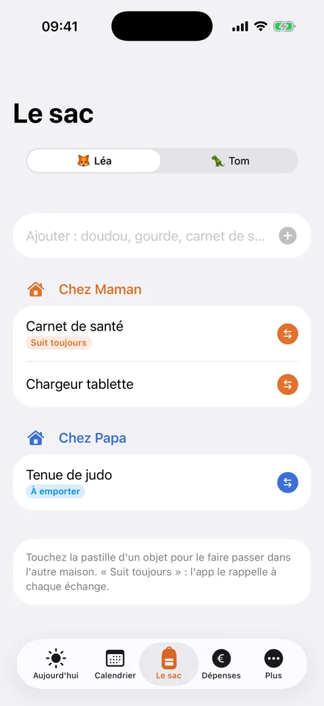
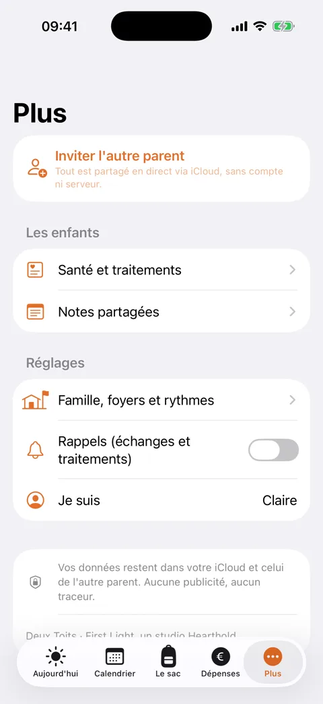

Deux Toits
La garde alternée, sereine. Un seul calendrier pour les deux maisons, le sac qui voyage, les dépenses et la santé, partagés en direct entre parents.
Ce soir, qui dort où ? Votre téléphone le sait déjà.
La veille, le sac est prêt. Rien n'est oublié.
Vendredi soir, chez Papa. Les deux parents le voient, en direct.
Deux toits. Un seul calendrier.
Simple à utiliser, complet quand il le faut
Le calendrier de votre jugement
Une semaine sur deux, 2-2-5-5, 2-2-3, un week-end sur deux ou votre propre rythme. Les vacances scolaires officielles de votre région (zones A, B, C en France, Belgique, Luxembourg, Suisse romande, Monaco), ou vos propres dates, la première moitié les années paires, les week-ends de la fête des mères et des pères, les échanges ponctuels.
Le sac qui voyage
Le doudou, le traitement, la tenue de sport : on voit ce qui est où, avec une liste avant chaque échange.
Les dépenses partagées
Qui a payé quoi, 50/50 ou votre propre partage, la photo du ticket, et un solde clair : qui doit combien à qui.
Santé et traitements
Allergies, médecin, traitements avec horaires : chaque parent coche la prise donnée, l'autre le voit aussitôt.
Familles recomposées
Autant de foyers que nécessaire, et un rythme par enfant : deux papas, deux mamans, chacun a sa place.
Privée par principe
Tout est partagé via vos propres comptes iCloud. Aucun compte à créer, aucun serveur, aucune pub, aucun traceur.
Qui est où ce soir, en un coup d'œil





Bien démarrer
Créez votre famille, ajoutez les foyers et les enfants, choisissez le rythme de garde, votre pays et votre région scolaire (zone, communauté ou canton). Puis invitez l'autre parent depuis l'onglet Plus : il reçoit un lien, l'ouvre sur son iPhone, et tout est partagé.
Une question ?
Écrivez-nous à moonbeamstudio.contact@gmail.com, nous répondons à chaque message.
Confidentialité
Deux Toits enregistre vos données sur votre appareil et dans votre propre compte iCloud. Quand vous invitez l'autre parent, la famille est partagée entre vos comptes iCloud grâce au partage CloudKit d'Apple. Nous, l'éditeur, n'y avons pas accès : pas de serveur à nous, pas de compte, ni publicité ni traceur. Les rappels sont des notifications locales créées sur votre appareil. Vous pouvez arrêter le partage ou effacer vos données à tout moment depuis l'app ou vos réglages iCloud.